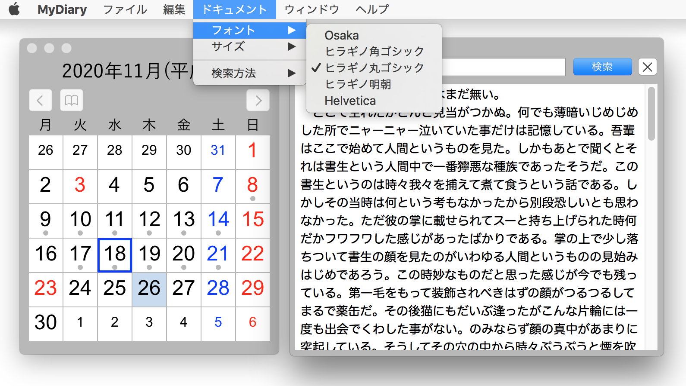

日記帳 〜 カレンダーから開く 〜
画像をクリックすると動画が表示されます。
テキストエディタ
テキストエディタは NSTextViewクラスにより実装する。テキストの形式はプレーンテキストのみとする。このクラスはアプリケーション「テキストエディット」で採用されていると思われ、このクラスを利用すればテキストエディットで出来る操作は基本的に全て実現可能であるはずだ。
行間問題（やや細かい話ではあるが）
フォントの種類によっては全角文字と半角文字の上下の配置が偏り、かなりおかしな見た目となる。上の図のように、フォントをHelvetica としたとき顕著となる。Osakaやヒラギノ系ではさほど気にならない。
これは「テキストエディット」でも全く同様で、調整したいときは行間隔をマイナス値にするとよさそう。[メニュー → フォーマット → テキスト → 間隔]
ただし本アプリでは、ルーラーを表示して設定を変えると原因の分からないエラーが発生するのでルーラーは組み込んでいない。
ところで、miやメールといったアプリではこのような状態にならないのは、エディタを独自に実装しているからだろうか。
日記帳の表示
特定の日の日記を開くには、カレンダーの日付のダブルクリックする、または日付を選択して開くボタンを押すか、メニューから「開く」を選択すれば、サブウィンドウが開き日記を記録したエディタを表示する。
サブウィンドウは最大10個まで同時に開くことができる。
ウィンドウの位置と大きさはユーザーデフォルトに記録され、アプリケーション終了後も引き継ぐ。新しく開くウィンドウは最後に閉じたウィンドウと同じになる。
ウィンドウのコントロール以外の領域をマウスでドラッグすると、それに合わせてウィンドウが移動する。
ウィンドウをマウスのドラッグで移動させるを参照
画像をクリックすると動画が表示されます。
フォントとサイズの変更
テキストのフォントとサイズをメニューから選択し変更する。実装には
通知機能
を利用する。選択されたフォントとサイズの値は、シングルトンオブジェクトに保持して、必要とするクラスから参照される。値は
plist
に保存してアプリケーション終了後も引き継ぐ。

画像をクリックすると動画が表示されます。
テキスト検索
キーワードによる検索を行う。検索にマッチした語はハイライトする。マッチした語が複数あるある場合は enterキーによりカーソルの位置をスキップする。正規表現による検索も可能とする。
画像をクリックすると動画が表示されます。
テキストの保存
入力したテキストは日付ごとにファイルに出力する。